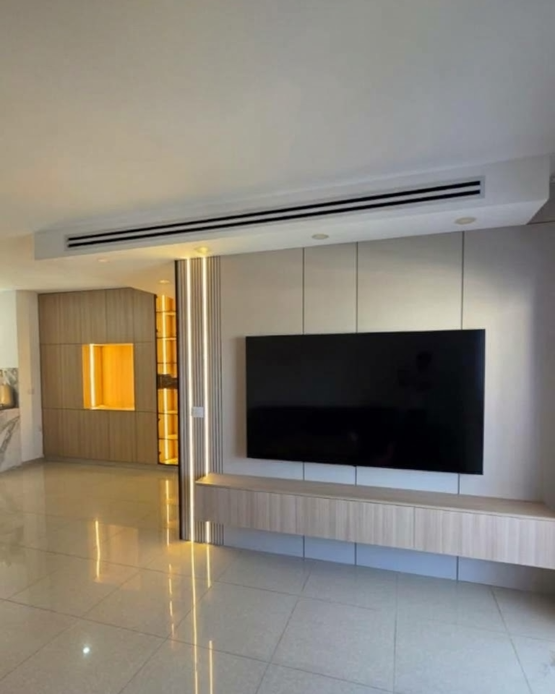
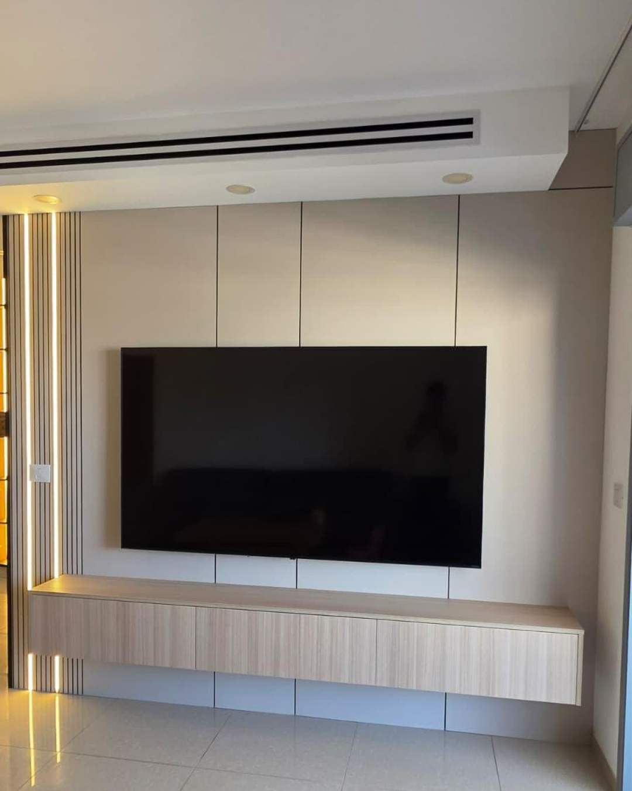
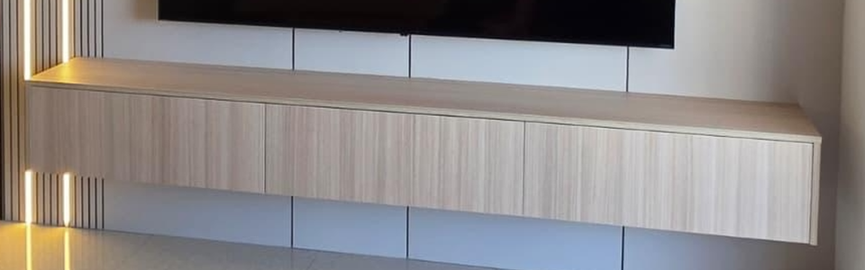
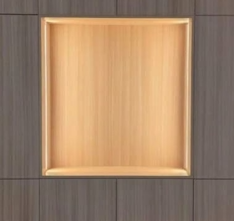
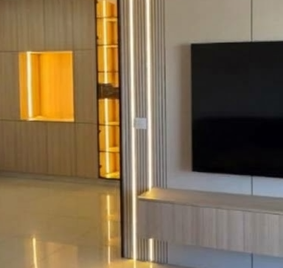
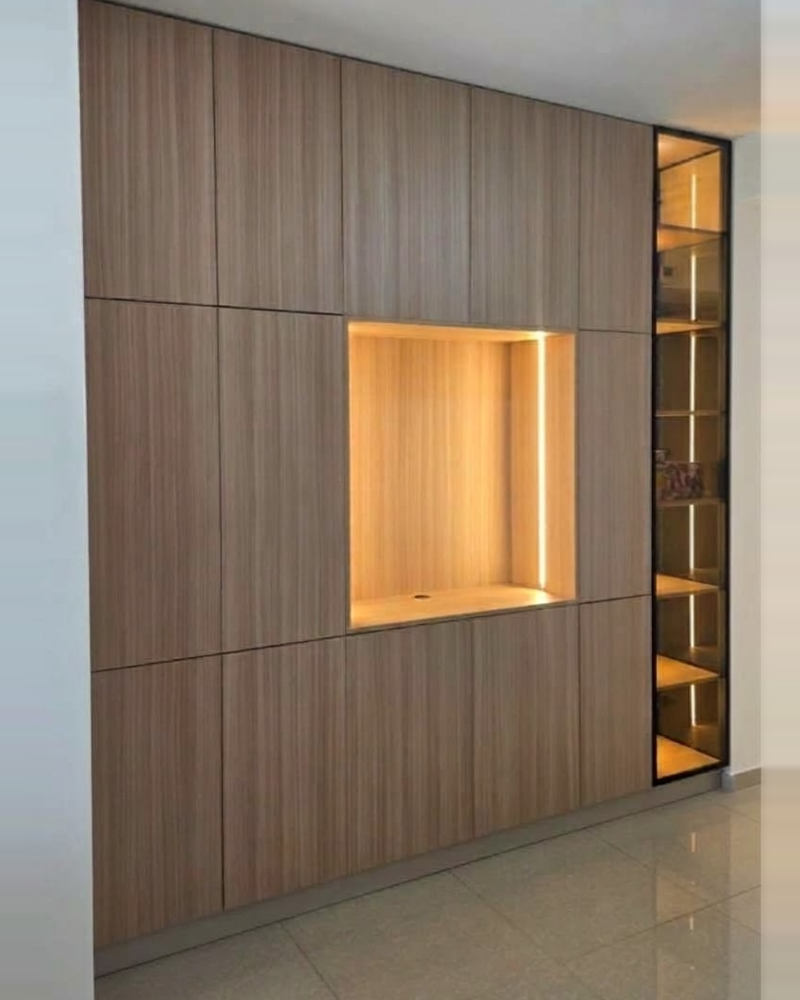

שני קירות,
שפה אחת.

הקווים ממשיכים
גם מתחת למזנון.
שלושה פרטים,
סלון אחד.

מזנון צף
תלוי על הקיר, והחריצים בחיפוי ממשיכים בקו אחד מעליו ומתחתיו.

נישה מוארת
תאורה חמה משולבת בתוך הנישה ומאירה את מה שמוצג בה, בלי מנורה גלויה.

עמוד פסים מואר
חיפוי פסים עם שני פסי לד, בדיוק בנקודה שבה קיר הטלוויזיה פוגש את קיר הנישה.

תכנון אישי לכל חלל